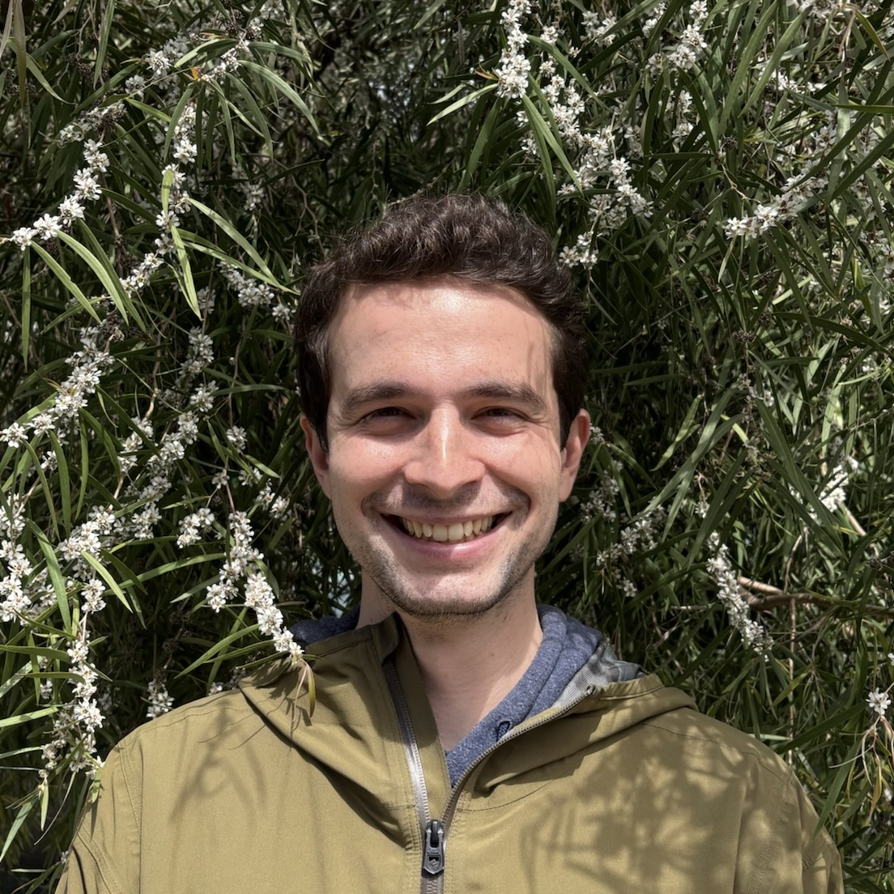

PhD Candidate
Department of Political Science
Stanford University
slucek@stanford.edu
© 2026 Sebastian Lucek. All rights reserved.
I am a PhD Candidate in the Department of Political Science at Stanford University and the Steven and Debi Wisch Fellow at the Center for South Asia for 2026-27. My research examines how religion, group identities, and social hierarchies shape and are shaped by democratic politics, with a regional focus on South Asia, especially India.
My work has been accepted for publication in the Journal of Politics and has received the Kenneth D. Wald Best Graduate Student Paper award from APSA's Religion & Politics section. My research is supported by the National Science Foundation, the King Center on Global Development, the Freeman Spogli Institute for International Studies, and the Stanford Institute for Economic Policy Research.
I hold an MA in Political Science from Stanford and an AB in Economics from Brown University. Before my doctoral studies, I lived in India, Senegal, and Nigeria and conducted field-based research on development policy and governance as a Senior Associate at IDinsight. I also contributed to Giving Green and a screenwriting project for a TV series based on Indian politics. I speak Hindi, Urdu, Polish, and Spanish, and I am an avid musician specializing in classical guitar along with sitar, which I have studied in the Hindustani classical tradition of the Maihar-Senia Gharana for the past 15 years under the guidance of V.W. Chitnis and at the Ali Akbar College of Music.